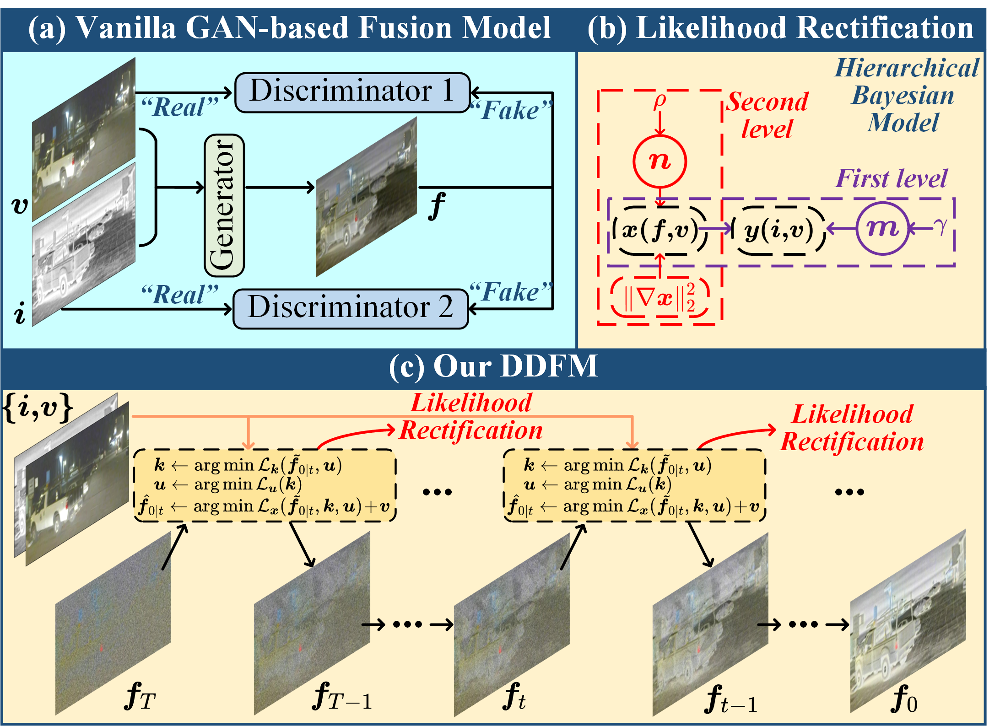
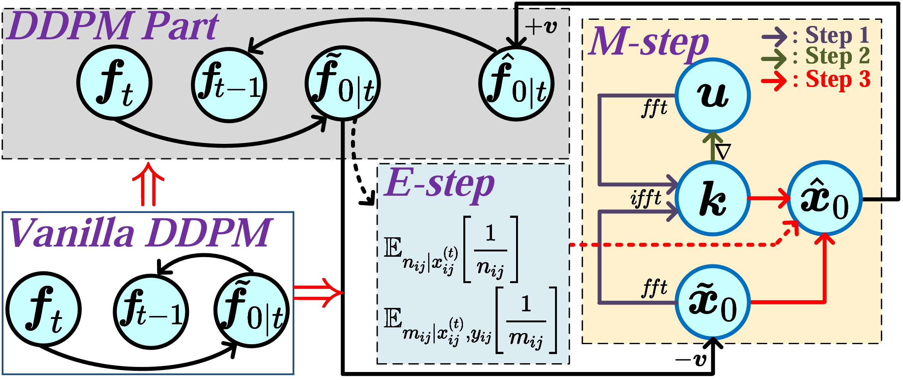
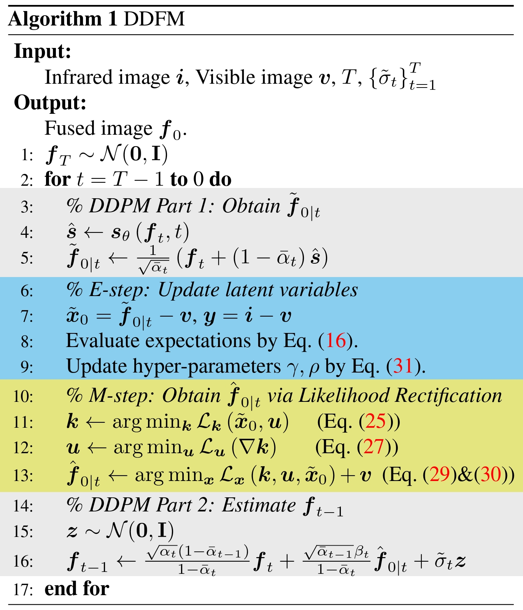
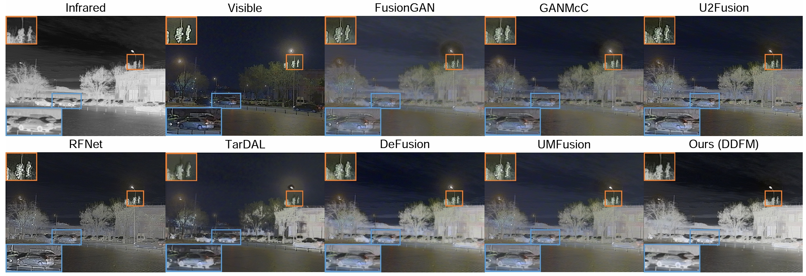
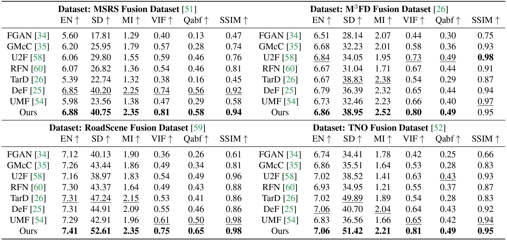
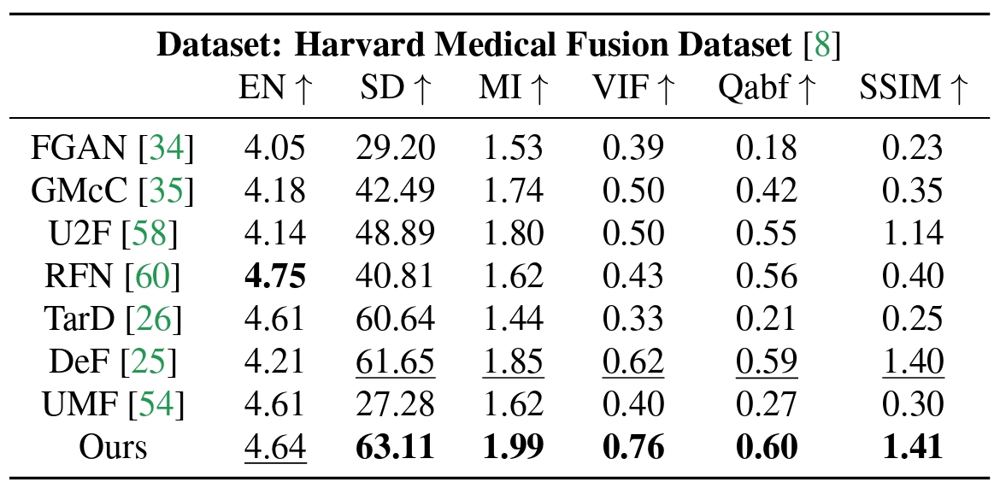

Adversarial training is fragile
GAN-based fusion can suffer from unstable optimization, opaque behavior, and mode collapse.
ICCV 2023 Oral
Denoising Diffusion Model for Multi-Modality Image Fusion
Core Idea
DDFM treats multi-modality image fusion as conditional generation. A pretrained unconditional DDPM provides natural image priors, while likelihood rectification injects infrared-visible or medical source information into each sampling step.
GAN-based fusion can suffer from unstable optimization, opaque behavior, and mode collapse.
IVF and MIF must preserve complementary cues without a single supervised fused image target.
Pretrained DDPMs provide a powerful natural image manifold for stable generation.
The generative prior must be steered toward thermal targets, textures, and medical structures.
Fusion is formulated as conditional DDPM posterior sampling over the fused image.
Source-image constraints refine each denoised estimate inside the sampling loop.
A hierarchical Bayesian model turns fusion losses into tractable latent-variable inference.
DDFM directly uses an unconditional pretrained diffusion model for IVF and MIF.
Overview

Architecture


DDFM decomposes conditional fusion into unconditional diffusion generation and likelihood rectification. The EM update steers the denoised estimate toward source-image information before the next sampling step.
Qualitative Results

DDFM preserves thermal targets while keeping visible-scene texture and natural image appearance.


Release
Citation
@InProceedings{Zhao_2023_ICCV,
author = {Zhao, Zixiang and Bai, Haowen and Zhu, Yuanzhi and Zhang, Jiangshe and Xu, Shuang and Zhang, Yulun and Zhang, Kai and Meng, Deyu and Timofte, Radu and Van Gool, Luc},
title = {DDFM: Denoising Diffusion Model for Multi-Modality Image Fusion},
booktitle = {Proceedings of the IEEE/CVF International Conference on Computer Vision (ICCV)},
month = {October},
year = {2023},
pages = {8082-8093}
}